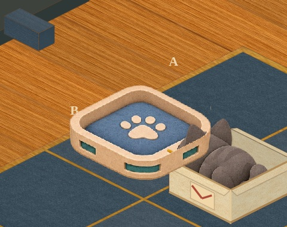
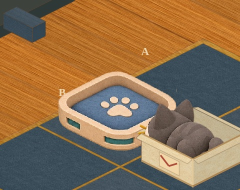
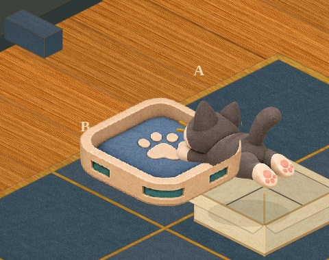
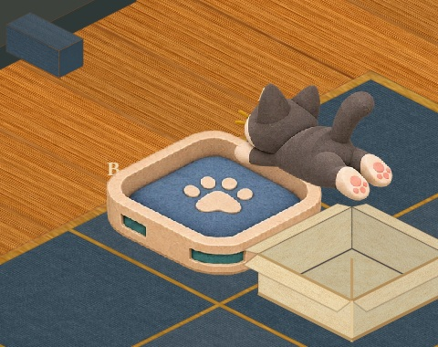
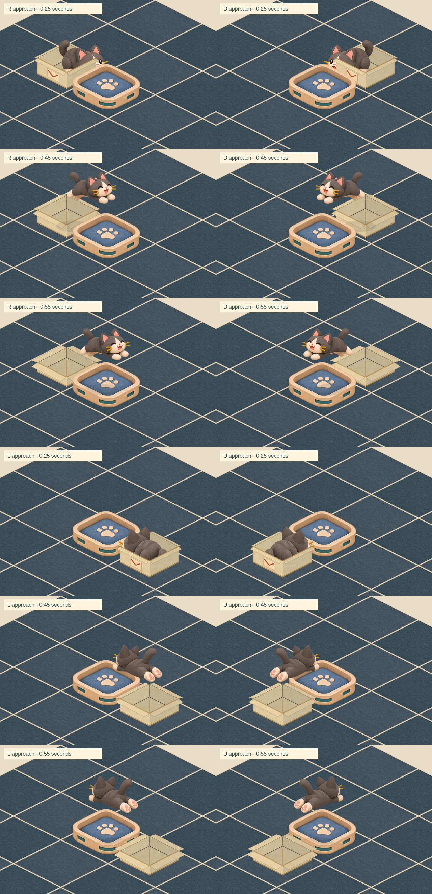

CATS BY POST · MAIL TRAINClear of the carrier
The carrier and receiving basket now sit in the right depth order. The cat lifts clear of both rims before landing, with the same takeoff and landing times as before.
Two separate objects on the floor

Before · the basket rim cuts across the supported cat.

After · the nearer carrier and cat remain in front.
Clearance over both rims

Before · 0.45 seconds after arrival.

After · exactly the same instant.
Watch the landing
Both real arrivals in delivery 5-1, shown at quarter speed so the rim clearance is easy to inspect. The playable study retains the original 0.2-second flight. These are sampled browser frames, not a device performance benchmark.
Inspect all four approach directions

This diagnostic rotates a copy of a canonical terminal trace to cover all four directions. It is a renderer fixture; no level has been added or changed.
All 15 deliveries, their board sizes and chapter transitions are retained. Gameplay, timing and saves are unchanged. The original basket artwork, water and trees are retained.